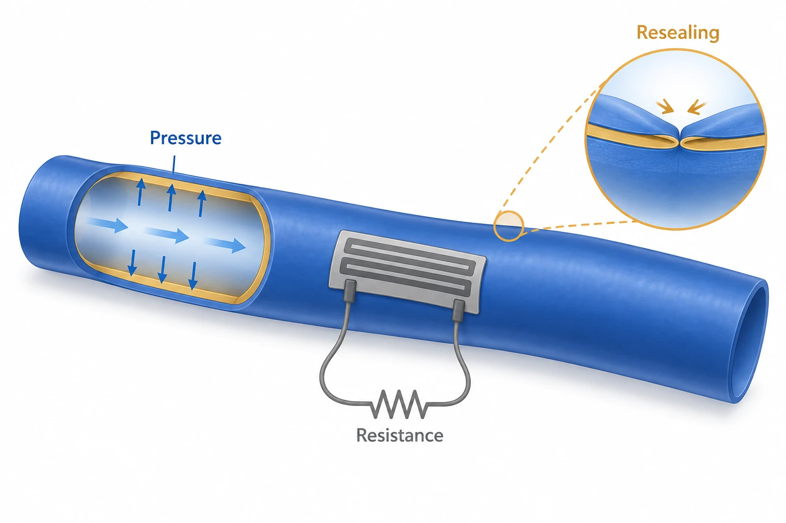

연구 개요
성균관대학교, 기초과학연구원(IBS)과 연세대학교 BLISS Lab(서정목 교수 연구실)이 함께 수행한 이 연구는 강인한 자가치유 고분자(T-SHP) 도관에 윤활 내벽 코팅과 탄소나노튜브(CNT) 압력 센서를 결합한 재밀봉형 항혈전 인공혈관(RAAVG)을 제시합니다. 이 인공혈관은 혈액 순환 중 25G 바늘로 뚫린 뒤 다시 밀봉되었고, 두 번째 T-SHP 층으로 보강한 봉합 부위는 50% 변형에서도 균열이 생기지 않았으며, 자가 결합한 센서는 10~100 mL/min 유량에서 흐름에 따른 압력 변화를 따라갔습니다.
연구 배경
관상동맥 우회술은 자가 혈관에 의존하지만 영유아와 고령자는 쓸 수 있는 혈관이 부족할 수 있고, 상용 확장 폴리테트라플루오로에틸렌(ePTFE) 인공혈관은 내강에 윤활층이 없어 혈전, 폐색, 감염 때문에 소구경 혈관 대체에 적합하지 않습니다. 저자들은 또한 기존 인공혈관이 바늘 천자 같은 기계적 손상 뒤 자가치유·자가밀봉되지 않고, PDMS처럼 공유결합으로 가교된 탄성체는 단단히 봉합된 계면의 응력을 분산하지 못하며, 접착이나 봉합으로 붙이는 혈압 센서는 기계적 불일치와 탈착 문제가 있다고 지적합니다.
설계와 접근
T-SHP는 4,4′-메틸렌비스(페닐우레아)(MPU) 단위의 강한 동적 수소 결합과 아이소포론 비스우레아(IU) 단위의 약한 수소 결합으로 가교된 PDMS 기반 고분자입니다. 드롭캐스팅한 T-SHP 필름을 몰드에 감아 60 °C에서 1시간 두면 이음매 없는 도관으로 치유되고, 내강에는 폴리도파민(PDA), 80 °C에서 3시간 경화한 과불소고분자(PFP), PFP를 팽윤시키는 과불소폴리에테르(PFPE) 윤활액을 차례로 입혀 혈관 내막을 모사한 약 200 nm 두께의 내층을 형성합니다. MPU:IU 비율은 2:8(M0.2I0.8)을 택했는데, 4:6 필름은 작은 곡률 반경으로 감기에는 너무 단단했고 0:10 필름은 비가역적인 점성 신장을 보였기 때문입니다. 압력 센서(P-CNT)는 단일벽 CNT 네트워크를 T-SHP에 묻은 구조여서 필름 간 자가치유로 도관에 부착됩니다.

AI 개념도입니다. 도관의 압력·변형을 저항으로 읽는 기능과 손상 부위의 재밀봉을 구분해 보여 줍니다.
설계 개념을 설명하기 위해 이 자료실에서 생성한 개념도로, 논문 원그림이 아니며 측정 데이터를 나타내지 않습니다.
평가 방법
MPU:IU 비율 4:6, 2:8, 0:10의 T-SHP 필름을 인장 시험하고 PBS 속 자가치유를 평가했습니다. RAAVG 표면은 PTFE, ePTFE, 코팅하지 않은 T-SHP와 물, 인공 뇌척수액, 모사 체액, 혈액의 접촉각·미끄럼각을 비교했고, 혈구 부착(헤파린 코팅과의 비교 포함), 알부민·피브리노겐 흡착, 100·200·300 rpm 진탕에서의 윤활층 유지, 37 °C PBS와 모사 체액에서 10일간의 분해, 용출물 시험에 의한 섬유아세포 독성을 평가했습니다. 구연산 처리 말 혈액을 무처리 및 코팅 실리콘 튜브에 2시간 순환시켜(결과 본문 36 mL/min, 방법 37 mL/min) 혈전 무게와 잔존 혈소판을 측정했습니다. 폐회로 혈액 순환 중 25G 바늘로 RAAVG를 뚫어 지혈을 시험했고, PDMS 또는 T-SHP 필름을 돼지 대동맥에 봉합해 봉합 시험을 했습니다. P-CNT 센서는 게이지 인자, 10·50·100 kPa 응답, 유량에 따른 저항 변화, 반복 바늘 천자에 대해 평가했습니다. 타당성은 돼지 대동맥에 RAAVG를 봉합한 체외 실험과, 쥐 피하에 1주간 이식한 실험 및 수컷 Sprague-Dawley 쥐의 구멍을 낸 하대정맥에 RAAVG를 감아 3일간 둔 실험으로 확인했고, 각각 모의수술군과 비교했습니다.
연구 내용과 주요 결과
4:6, 2:8, 0:10 필름의 영률은 각각 0.54, 0.41, 0.33 MPa, 인성은 18.95, 5.49, 1.97 J m−2였습니다. 저자들은 모든 영률이 설치류·영장류·사람 혈관과 비슷하다고 보았으며, 생리적 범위의 사람 혈관 영률로 0.2−0.6 MPa를 인용했습니다. PBS에서 4시간 치유한 T-SHP 필름은 균열 전파 없이 200% 넘게 늘어났고, RAAVG 도관은 30회 압착 후에도 형태를 유지했습니다.
PTFE와 ePTFE에서는 체액 방울이 붙잡혀 있었고 혈액은 미끄러지지 않았지만, RAAVG 필름은 미끄럼각이 10° 미만이었고 최대 300 rpm 진탕 뒤에도 미끄럼각이 유지되었습니다. 혈구와 혈병은 T-SHP에는 부착했으나 RAAVG에는 부착하지 않았고, 헤파린 코팅 기판에 소량의 부착이 있었던 것과 달리 RAAVG에는 부착이 거의 없었습니다. 2시간 배양 후 RAAVG의 알부민·피브리노겐 흡착은 무시할 수준이었습니다. 혈액 순환 시험에서 윤활 코팅 튜브는 혈전이 적고 잔존 혈소판이 많았으며, 서론은 무처리 튜브에서 혈소판이 70%만 남았다고 보고합니다. T-SHP와 RAAVG는 10일 동안 분해되지 않았고, 용출물은 섬유아세포 생존율을 낮추지 않았으며, 반으로 잘랐다가 치유한 RAAVG도 혈액을 밀어냈습니다.
50 mL/min 폐회로 순환에서 25G 바늘을 빼자 혈액 한 방울만 맺히고 추가 누출은 없었으며, 실온에서 24시간 순환 후 천자 부위가 사라졌습니다. 봉합한 단층 T-SHP 필름은 30% 변형에서 파단 없이 변형되었지만 PDMS 필름(전구체:가교제 1:25)은 끊어졌고, 봉합 부위 위에 두 번째 T-SHP 층을 치유시켜 붙이면 50% 변형에서도 균열이나 구멍이 없었습니다.
전도도가 낮은 P-CNT 센서의 게이지 인자는 변형 30% 미만과 초과에서 0.184와 0.186으로, 전도도가 높은 센서(0.053, 0.140)보다 컸고, 10, 50, 100 kPa 압력을 구분했습니다. T-SHP 도관에 장착한 센서의 평균 저항 진폭은 결과 본문 기준 최대 유량 10, 50, 100 mL/min에서 3.93, 9.57, 13.17 kΩ이었습니다(그림 5 설명은 20, 50, 100 mL/min으로 표기). 바늘을 빼면 누출이 즉시 멈췄고, 100 mL/min에서 다섯 번의 바늘 천자 동안 전기적 교란 없이 감지가 유지되었으며, 20, 50, 100 mL/min으로 불규칙하게 바뀌는 유량도 따라갔습니다. 면도날로 낸 센서 표면의 긁힘은 치유되었고, 센서를 결합하면 무처리 T-SHP보다 영률이 약간 증가했습니다.
체외 실험에서 RAAVG를 봉합한 돼지 대동맥으로 말 혈액이 누출 없이 흘렀습니다. 쥐 피하에 1주간 이식한 뒤 헤마톡실린·에오신(H&E) 염색에서 분해나 대조군 대비 유의한 염증 반응은 관찰되지 않았습니다. 구멍을 낸 하대정맥에 3일간 감아 둔 RAAVG는 구멍을 덮었고 모의수술군 대비 유의한 염증이 없었으며, 주사전자현미경(SEM)에서 내·외부 표면에 유의한 부착이 없었습니다.
남은 과제
소동물 모델에서 이식편 수술이 어려워 생체 내 혈관 시험은 혈관 분절을 대체하는 대신 구멍을 낸 하대정맥에 RAAVG를 감는 방식으로 수행했고, 기간은 3일이었습니다. 저자들은 또한 이식편 소재의 자가치유 특성 때문에 압착 시 도관 벽끼리 달라붙을 수 있으며, 윤활 내벽 코팅이 이를 막는다고 밝혔습니다.
함께 읽을 연구
Biodegradable and flexible arterial-pulse sensor for the wireless monitoring of blood flow
DOI: 10.1038/s41551-018-0336-5 ↗
Boutry 등은 동맥에 감아 맥박을 무선으로 전송하는 분해성 유연 정전용량 센서를 설명합니다. 이 연구는 저항형 CNT 압력 센서를 인공혈관 자체와 결합하고, 같은 자가치유 고분자를 사용해 센서가 도관에 결합하며 바늘 천자 후 둘 다 다시 밀봉되도록 했습니다.
초록을 참고한 소개RESEARCH NEWS
연구 소식
해설에 사용한 자료
이 해설은 출판된 ACS Nano PDF의 초록, 서론, 결과 및 고찰, 결론, 실험 방법, 그림 1~6 설명에 근거하며, 보충자료(그림 S1~S10과 영상 S1~S4)는 검토하지 않았습니다.